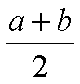

Arithmetic (Basic Operations)
- All four basic arithmetic operations are
supported by C++:
- Addition and subtraction: + -
- Multiplication and division: * /
- Multiplication and division bind more strongly than addition and subtraction.
-
 a + b / 2
a + b / 2 ( a + b ) / 2